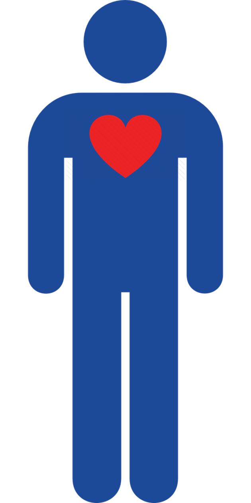

<!DOCTYPE html>
<html>

<head>
  <title>Mate choice experiment</title>
  <script src="jspsych-6.1.0/jspsych.js"></script>
  <script src="jspsych-6.1.0/plugins/jspsych-html-keyboard-response.js"></script>
  <script src="jspsych-6.1.0/plugins/jspsych-image-keyboard-response.js"></script>
  <script src="jspsych-6.1.0/plugins/jspsych-image-button-response.js"></script>
  <script src="jspsych-6.1.0/plugins/jspsych-html-button-response.js"></script>
  <script src="jspsych-6.1.0/plugins/jspsych-external-html.js"></script>
  <script src="jspsych-6.1.0/plugins/jspsych-fullscreen.js"></script>
  <script src="jspsych-6.1.0/plugins/jspsych-survey-html-form.js"></script>
  <script src="jspsych-6.1.0/plugins/jspsych-instructions.js"></script>
  <script src="jspsych-6.1.0/plugins/jspsych-survey-multi-select.js"></script>
  <script src="jspsych-6.1.0/plugins/jspsych-video-button-response.js"></script>
  <script src="jspsych-6.1.0/plugins/jspsych-survey-text.js"></script>
  <script src="jspsych-6.1.0/plugins/jspsych-image-slider-response.js"></script>
  <script src="https://cdnjs.cloudflare.com/ajax/libs/axios/0.20.0/axios.js"
    integrity="sha512-nqIFZC8560+CqHgXKez61MI0f9XSTKLkm0zFVm/99Wt0jSTZ7yeeYwbzyl0SGn/s8Mulbdw+ScCG41hmO2+FKw=="
    crossorigin="anonymous"></script>
  <script src="data/pairs.js"></script>
  <link href="jspsych-6.1.0/css/jspsych.css" rel="stylesheet" type="text/css">
  </link>

  <script>
    /* Trying to set a delay but its not working correctly

    window.onload = function(){
      var theDelay = 10;
      var timer = setTimeout("showText()",theDelay*1000)
    }
    function showText(){
      document.getElementById("delayedText").style.visibility = "visible";
    }
    */
  </script>


  <style>
    .leftallign {
      text-align: justify
    }

    .votes {
      outline: none;
      width: 49%
    }

    .picpair {
      width: 98%
    }
  </style>

</head>

<body></body>
<script>

  //create timeline
  var timeline = [];

  // generate a random subject ID with 15 characters
  var subject_id = jsPsych.randomization.randomID(15);

  // record the subject ID in the jsPsych data
  // this adds a property called 'subject'  to every trial
  jsPsych.data.addProperties({
    subject: subject_id,
  });


  ///////////////////////////////////////////////////////////////////////////////////////////////

  /* CONSENT *//*
 
   // Function to check if a subject has given consent to participate.
   var check_consent = function (elem) {
     if (document.getElementById('consent_checkbox').checked) {
       return true;
     }
     else {
       alert("If you wish to participate, you must check the box next to the statement 'I agree to take part in this study.'");
       return false;
     }
     return false;
   };
 
   //Consent form 
   var Consent = {
     type: 'external-html',
     url: "Consent.html", //load the external file
     cont_btn: "start",
     check_fn: check_consent
   };
   timeline.push(Consent);
 
 
 *///////////////////////////////////////////////////////////////////////////////////////////////

  //Turn on fullscreen mode
  timeline.push({
    type: "fullscreen",
    fullscreen_mode: true
  });

  /* QUESTIONNAIRE */
  /*
      // Function to check if a subject has given answered all questions.
   /*
      var check_questionnaire = function(elem) {
        var ddl = document.getElementById("onlinedating");
        var selectedValue = ddl.options[ddl.selectedIndex].value;
     if (selectedValue == "")
      alert("Please select an option")
     
     else { return true
     }
     }
  
     var check_questionnaire2 = function(elem) {
        var ddl = document.getElementById("living");
        var selectedValue = ddl.options[ddl.selectedIndex].value;
     if (selectedValue == "")
      alert("Please select an option")
     
     else { return true
     }
     }
  
  
    /* THIS IS NOT WORKING 
    var = dropdowns["nationalities","growin","livein","ethnicity","english","education","orientation","relationship","living","onlinedating"]
      
      for (i=0 , i <= dropdowns.length, i++)
      var check_questionnaire = function(elem) {
         var ddl = document.getElementById("onlinedating");
         var selectedValue = ddl.options[ddl.selectedIndex].value;
      if (selectedValue == "")
       alert("Please select an option")
      
      else { return true
      }
      }
      
  
    //Here's a function that will return true if at least one radio button is selected somewhere on the page. Again, this might need to be tweaked depending on your specific HTML.
    function atLeastOneRadio() {
        return ($('input[type=radio]:checked').size() > 0);
    }
    
  
    
    //Questionnaire
     var Questionnaire = {
       type: 'external-html',
       url:  "Questionnaire.html", //load the external file
     cont_btn: "questionnaireCompleted",
     //check_fn: check_questionnaire
     };
   
     timeline.push(Questionnaire);
   
  
  */
  ///////////////////////////////////////////////////////////////////////////////////////////////

  /* INSTRUCTIONS */
  /*
 
  //Instructions1 - Alternative version
   
   var Instructions1 = {
     type: 'instructions',
     pages: ['<h3> Instructions </h3> In this section of the study, you will be shown pairs of female portraits in a fictional dating website. We would like you to behave as you would if you were using a real online dating service with real users and make choices accordingly. You will be prompted to vote on <strong>which individual you would prefer to go on a date with</strong>. You will also be able to see votes from the other users of the service. Votes are represented by the icon below: <br> </img> <br> Click next to begin.',
     ],
     show_clickable_nav: true
   }
   timeline.push(Instructions1)
 
 //Instructions1
   var Instructions1 = {
     type: 'html-button-response',
     stimulus: '<h3> Instructions </h3> <p class="leftallign">  In this section of the study, you will be shown pairs of female portraits in a fictional dating website. We would like you to behave as you would if you were using a real online dating service with real users and make choices accordingly. <br> You will be prompted to vote on <strong>which individual you would prefer to go on a date with</strong>. You will also be able to see votes from the other users of the service. Votes are represented by the icon below: </p> </img> <p class="leftallign"> Additionally, we will also show  you separate portraits and ask  you simple questions about them (for example "what is their eye color?"). </p> <br><br>',
     choices: ['Click here to watch a demonstration video'],
   }
   timeline.push(Instructions1)
 
 // Demo videos
 var demo1 = {
     type: 'video-button-response',
     sources: ['vid/Demonstrative example - Part 1and2.mp4'],
     choices: ['Next'],
     button_html: '<button class="jspsych-btn">%choice%!</button>',
     margin_vertical: '10px',
     margin_horizontal: '8px',
     prompt: 'You will be shown two female portraits in our dating platform, side by side. Votes from the users are loaded above the pictures.',
     width: 850,
     //height: 600,
     autoplay: true,
     //controls: true,
     //start: 8,
     //stop: 9,
     rate: 1.5,
     //trial_duration: 2000,
     
     response_ends_trial: true
   }
 timeline.push(demo1);
 
   var demo2 = {
     type: 'video-button-response',
     sources: ['vid/Demonstrative example - Part 3.mp4'],
     choices: ['Next'],
     button_html: '<button class="jspsych-btn">%choice%!</button>',
     margin_vertical: '10px',
     margin_horizontal: '8px',
     prompt: 'You will be shown two female portraits in our dating platform, side by side. Votes from the users are loaded above the pictures.',
     width: 850,
     //height: 600,
     autoplay: true,
     //controls: true,
     //start: 8,
     //stop: 9,
     rate: 1.5,
     //trial_duration: 2000,
     
     response_ends_trial: true
   }
   timeline.push(demo2);
 
  //Instructions2 - alternative version
  /*var Instructions2 = {
     type: 'instructions',
     pages: ['<h4> Demonstration finished </h4> This version of the experiment is a work-in-progress used for pilot studies. The trials that follows may not look exactly like what you have just been shown, but is rather a simplified version. To pick between pictures, use your arrow keys as shown below: <br> </img> <br> Click next to begin experiment.',
     ],
     show_clickable_nav: true
   }
   timeline.push(Instructions2)
 
   //Instructions2
   var Instructions2 = {
     type: 'html-button-response',
     stimulus: '<h4> Demonstration finished </h4> <p class="leftallign"> This version of the experiment is a work-in-progress used for pilot studies. The trials that follows may not look exactly like what you have just been shown, but is rather a simplified version. To pick between pictures, use your arrow keys as shown below:  </p> </img> <br><br>',
     choices: ['Click here to begin experiment!'],
   }
   timeline.push(Instructions2)
 
 
   *////////////////////////////////////////////////////////////////////////////////////////////////

  /* MATE CHOICE TRIALS */

  //Eye colour pick
  var Eyecolour1 = {
    type: 'image-button-response',
    stimulus: 'img/bonus/3.5-WM-253.jpg',
    prompt: "What is this individual's eye colour?",
    stimulus_height: 400,
    choices: ['Brown', 'Blue']
  }
  timeline.push(Eyecolour1)

  //Age pick
  var Age1 = {
    type: 'image-slider-response',
    stimulus: 'img/bonus/3.5-WM-253.jpg',
    labels: ['10', '|', '20', '|', '30', '|', '40', '|', '50', '|', '60'],
    min: 0,
    max: 60,
    start: 30,
    require_movement: true,
    stimulus_height: 400,
    prompt: "Estimate his age using the slider above. <br>",
  };
  timeline.push(Age1)


  //Mate choice trials
  var mate_choice_trial2 = {
    timeline: [

      {
        type: 'html-keyboard-response',
        stimulus: jsPsych.timelineVariable('pair'),
        prompt: "<p> Which individual would you prefer to go on an date with? <br> <div id='delayedText' style='visibility:visible'> <strong>Use your left and right arrows to choose </strong> </p></div>",
        choices: [37, 39],
        trial_duration: 10000,
      }
    ],
    timeline_variables: pairs,
    randomize_order: true,

    sample: {
      type: 'without-replacement',
      size: 10, // 10 trials, without replacement
    },
  }
  timeline.push(mate_choice_trial2);
  /*
  //Mate choice trials
    var mate_choice_trial = {
      timeline: [
  
        {
          type: 'image-keyboard-response',
          stimulus: jsPsych.timelineVariable('pair'),
          prompt: "<p>Which individual would you prefer to go on an date with? <br>...</p>",
          trial_duration: 1000,
          stimulus_height: 550,
          choices: jsPsych.NO_KEYS
        },
        {
          type: 'image-keyboard-response',
          stimulus: jsPsych.timelineVariable('pair'),
          prompt: "<p>Which individual would you prefer to go on an date with? <br> <strong>Use your left and right arrows to choose </strong> </p>",
          choices: [37, 39],
          trial_duration: 9000,
          stimulus_height: 550,
        }
      ],
      timeline_variables: pairs,
      randomize_order: true,
  
      sample: {
        type: 'without-replacement',
        size: 10, // 10 trials, without replacement
      },
    }
    timeline.push(mate_choice_trial);
  
  //Eye colour pick
    var Eyecolour2 = {
      type: 'html-button-response',
      stimulus: 'The goal of this task is to test your attention. Here, select <strong>"Brown"</strong> regardless of the actual colour. </img> <br>',
      prompt: "What is this individual's eye colour, <strong> based on the text above the picture</strong>?",
      choices: ['Brown', 'Blue'],
    }
    timeline.push(Eyecolour2)
  
    //Age pick
    var Age2 = {
      type: 'image-slider-response',
      stimulus: 'img/bonus/3.51-WM-015.jpg',
      labels: ['10', '|' , '20','|' , '30','|' , '40','|' , '50','|' , '60'],
      min : 0,
      max : 60,
      start: 30,
      require_movement: true,
      stimulus_height: 400,
      prompt: "Estimate his age using the slider above. <br>"
  };
    timeline.push(Age2)
  
    //End of trials message
  var TestEnd = {
      type: 'html-button-response',
      stimulus: '<h4> This is the end of this task. </h4> ',
      choices: ['Continue to next section'],
    }
    timeline.push(TestEnd)
  
  ///////////////////////////////////////////////////////////////////////////////////////////////
  
  /* DEBRIEFING */

  var Perception = {
    type: 'survey-multi-select',
    questions: [
      {
        prompt: "In general, what as your impression about the votes of other participants that you saw? <br> Please check the options that fit.",
        options: ["Generally agree", "Did not agree or disagree", "Generally disagree", "I took them into consideration for my choices", "I did not pay attention to them"],
        horizontal: false,
        required: true,
        name: 'Feedback'
      }
    ],
  };
  timeline.push(Perception);


  //Explanation
  var Debriefing = {
    type: 'html-button-response',
    stimulus: " <h4> This is the end of this experiment. </h4> <br> <p class='leftallign' >The goal of this study was to determine the effect of social information on human mate choice. In this experiment, you were shown pairs of female faces of similar attractiveness and asked to pick the most attractive one. At the same time, you were provided social information in the form of a vote tally from fictional voters. By comparing your votes with those of other participants without such information, we can calculate the effect of social information in mate choice. <br> Your participation is greatly appreciated! If you have any questions about this study or would like to be updated about the study's results, please contact us. The name and email address of the main researcher in this project is listed below: </p> Ricardo Santiago Araújo - <strong> ricardo.santiago-araujo@univ-tlse3.fr </strong> <p class='leftallign'> Finally, we urge you not to discuss this study with anyone else who is currently participating or might participate in the future. As you can certainly appreciate, prior knowledge of the nature of this study would influence the behavior of participants and thus negatively affect the validity of the data.</p>",
    choices: ['Click here to finish']
  }
  timeline.push(Debriefing)


  //Feedback
  var Feedback = {
    type: 'survey-text',
    questions: [
      { prompt: "<strong> Conclusion of experiment pilot. </strong> <br><br> <div class='leftallign'>Please write here any Suggestions/Observations about the experiment that you would like to share with us. Your feedback is greatly appreciated! </div>", rows: 15, columns: 70 },
      { prompt: "<div class='leftallign'> Were you already aware of the purpose of this experiment before you took part?</div>", rows: 3, columns: 70 }
    ]

  };
  timeline.push(Feedback)


  /* test trials */

  /*var test_stimuli = [
    { stimulus: "img/blue.png", data: { test_part: 'test', correct_response: 'f' } },
    { stimulus: "img/orange.png", data: { test_part: 'test', correct_response: 'j' } }
  ];

  var fixation = {
    type: 'html-keyboard-response',
    stimulus: '<div style="font-size:60px;">+</div>',
    choices: jsPsych.NO_KEYS,
    trial_duration: function () {
      return jsPsych.randomization.sampleWithoutReplacement([250, 500, 750, 1000, 1250, 1500, 1750, 2000], 1)[0];
    },
    data: { test_part: 'fixation' }
  }

  var test = {
    type: "image-keyboard-response",
    stimulus: jsPsych.timelineVariable('stimulus'),
    choices: ['f', 'j'],
    data: jsPsych.timelineVariable('data'),
    on_finish: function (data) {
      data.correct = data.key_press == jsPsych.pluginAPI.convertKeyCharacterToKeyCode(data.correct_response);
    }
  }

  var test_procedure = {
    timeline: [fixation, test],
    timeline_variables: test_stimuli,
    randomize_order: true,
    repetitions: 5
  }

  timeline.push(test_procedure);


  /* define debrief */
  /*  
    var debrief_block = {
      type: "html-keyboard-response",
      stimulus: function () {
  
        var trials = jsPsych.data.get().filter({ test_part: 'test' });
        var correct_trials = trials.filter({ correct: true });
        var accuracy = Math.round(correct_trials.count() / trials.count() * 100);
        var rt = Math.round(correct_trials.select('rt').mean());
  
        return "<p>You responded correctly on " + accuracy + "% of the trials.</p>" +
          "<p>Your average response time was " + rt + "ms.</p>" +
          "<p>Press any key to complete the experiment. Thank you!</p>";
  
      }
    };
  
    timeline.push(debrief_block);
  
    /* start the experiment */
  jsPsych.init({
    timeline: timeline,
    on_finish: function () {
      handleData();
    }
  });

function handleData(){
  const questionnaireData = JSON.parse(jsPsych.data.get().json());
  const data = { data: questionnaireData };

  axios.post("http://127.0.0.1:3000/questionnaires/add", data);
}

</script>

</html>